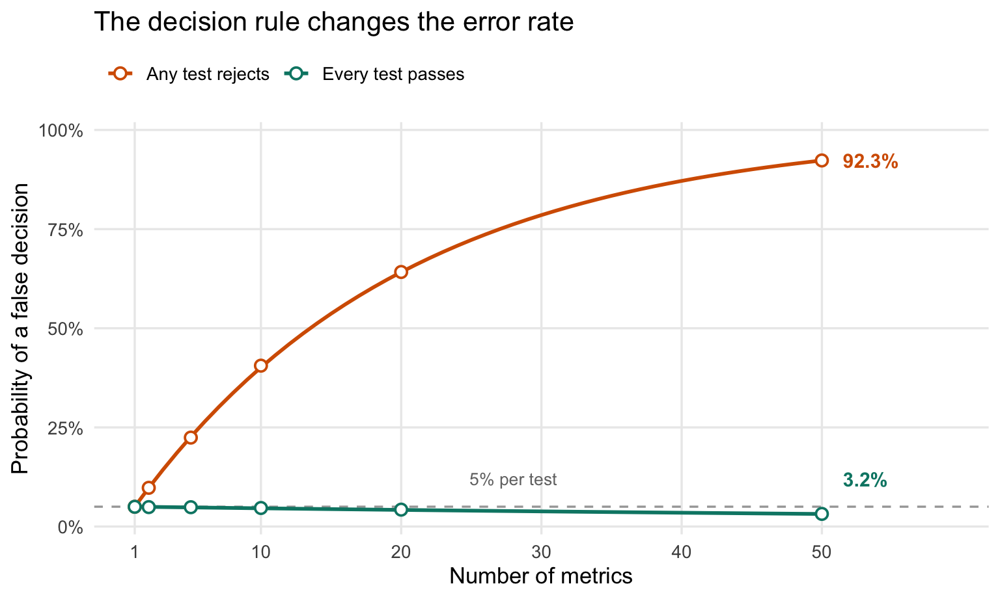

Controlling for multiple testing with non-inferiority tests
More metrics don’t always mean more false positives. Here’s why requiring every non-inferiority test to pass changes the multiple-testing problem.
statistics
Published
September 11, 2026
We all know that multiple hypothesis testing suffers from an inflated false positive rate under the null hypothesis: if you have \(N\) independent tests, each has a \(\alpha\) probability of yielding a p-value \(< \alpha\) , so the probability of any test yielding a statistically significant result is the complement of the probability of no test yielding a statistically significant result: \(1 - (1 - \alpha)^N\) , which for small \(\alpha\) is \(\sim N\alpha\) . So far so good: \(N\) independent tests multiply the false positive rate by about \(N\), which is why the Bonferroni correction divides the desired significance level by \(N\).
But non-inferiority tests are… weird. You’re testing to make sure that the difference \(d\) between your proposed treatment’s metric and your baseline’s metric isn’t worse than some (typically small) threshold \(- \delta\) , assuming that you want your metric to be large. You’d think that the null hypothesis is that there’s no difference between treatment and control. Wrong. With non-inferiority tests, the null hypothesis \(H_0\) is the opposite: \(d \in ]-\infty; - \delta]\) . This means that you want the test to actually reject the null hypothesis. So your change will “pass” the test with probability \(\alpha\)1.
Now what if you have more than one metric? Intuition warns us that you need to watch out for some multiple testing. So let’s work this out. Let’s assume there is no correlation between the \(N\) metrics. The happy path is when we reject the \(N\) null hypotheses. The sad path is when any metric shows a regression but we reject its null hypothesis (as well as that for every other metric). What’s the probability of that happening?
In the worst case (when the regression is exactly \(- \delta\)), that probability is \(\alpha\) times the probability of rejecting the null for each of the other metrics that didn’t regress. We don’t know what the latter is, because the probability of rejecting the null under the alternative hypothesis is the statistical power of the test and we didn’t specify that. But it’s a probability (and usually a large one) so let’s assume it’s slightly smaller than 1. And the product of \(N-1\) probabilities that are all slightly smaller than 1 will definitely be far from \(N\)—let’s say it’s about 1, so the overall proability of rejecting the null is still \(\alpha\), or slightly less than \(\alpha\).
Wait. What happened?
We just computed the probability of giving the whole set of tests a “pass”, conditional on one metric having regressed. No, you don’t need to multiply again by the number of metrics because we said it’s conditional on one metric having regressed, so the only metric that “donates” to the overall probability is just that one. (That’s unlike the multiple testing above where every metric “donates” to the overall probability of having at least one test rejecting the null.)
Nah I can see you’re not convinced yet. Let’s simulate.
We’ll simulate independent normally distributed estimates of treatment effects, with known standard errors, so we can use one-sided z-tests. We’ll use 200 observations per arm and a population standard deviation of 1 in each arm. Rather than generate every observation, we can draw each estimated difference directly from its sampling distribution: \(\hat d \sim N(d, 2/200)\).
For ordinary testing, every true effect is zero and we count an error when any test rejects \(H_0: d \leq 0\). For non-inferiority testing, one metric is exactly at the null boundary \(d = -\delta\), the others have zero effect, and we count an error only when all tests reject their respective \(H_0: d \leq -\delta\). We use \(\alpha = 0.05\) for every test, without any multiple-testing correction.
set.seed(20260911)alpha <-0.05n_per_arm <-200se <-sqrt(2/ n_per_arm)delta <-0.4critical_z <-qnorm(1- alpha)n_sim <-100000metric_counts <-c(1, 2, 5, 10, 20, 50)# Power of a non-inferiority test when the true effect is zero.power_no_regression <-pnorm(delta / se - critical_z)simulate_tests <-function(N) {# Each row is one experiment; each column is an independent metric. noise <-matrix(rnorm(n_sim * N, sd = se), nrow = n_sim)# Ordinary tests: all true effects are zero; any rejection is an error. ordinary_reject <- noise / se > critical_z ordinary_error <-rowSums(ordinary_reject) >0# Non-inferiority: metric 1 is at -delta, all others are at zero.# Reusing the noise makes the comparison reproducible without changing# either scenario's marginal distribution. estimated_effects <- noise estimated_effects[, 1] <- estimated_effects[, 1] - delta ni_reject <- (estimated_effects + delta) / se > critical_z ni_error <-rowSums(ni_reject) == Ndata.frame(N = N,ordinary_simulated =mean(ordinary_error),ordinary_theory =1- (1- alpha)^N,ni_simulated =mean(ni_error),ni_theory = alpha * power_no_regression^(N -1) )}results <-do.call(rbind, lapply(metric_counts, simulate_tests))knitr::kable( results,digits =4,col.names =c("Metrics", "Ordinary: simulated", "Ordinary: theory","Non-inferiority: simulated", "Non-inferiority: theory" ),caption ="Probability of a false positive decision across 100,000 experiments.")
Probability of a false positive decision across 100,000 experiments.
Metrics
Ordinary: simulated
Ordinary: theory
Non-inferiority: simulated
Non-inferiority: theory
1
0.0498
0.0500
0.0498
0.0500
2
0.0976
0.0975
0.0490
0.0495
5
0.2243
0.2262
0.0487
0.0482
10
0.4057
0.4013
0.0467
0.0460
20
0.6418
0.6415
0.0426
0.0419
50
0.9231
0.9231
0.0318
0.0317

Figure 1: Lines show theoretical probabilities; points show the simulation results above. Metrics are independent and each test uses a 5% significance level. Ordinary testing has all effects at zero; non-inferiority has one effect at the harm threshold and all others at zero.
The ordinary false positive rate climbs from 5% for one metric to about 92% for 50 metrics. The non-inferiority false pass rate also changes as we add metrics, but only modestly in absolute terms: it falls from 5% to about 3.2%, remaining close to \(\alpha = 5\%\) over the range shown here. Each metric with zero effect has power \(1 - \beta \approx 99\%\): the probability that its non-inferiority test correctly rejects the null and passes. Here, \(\beta\) is the probability of a Type II error—failing to demonstrate non-inferiority when the true effect is zero. Requiring all tests to pass can only reduce the chance that the whole experiment passes. With independent metrics, that chance is exactly \(\alpha\,(1 - \beta)^{N-1}\) in this scenario. The decline is modest here because \(1 - \beta\) is so close to 1; with lower power or many more metrics, the false pass rate could fall much further below \(\alpha\).
In case you need a formal proof, it’s actually quite trivial. When at least one metric has a true regression \(d_j \leq -\delta\), passing every test requires incorrectly rejecting that metric’s null hypothesis. Therefore,
This bound holds even when the metrics are correlated, when several metrics are at or below the margin, or when a regression is worse than \(-\delta\). Independence is needed for the product formula above, but not for this bound. The key is that our decision requires every metric to demonstrate non-inferiority. A rule that accepts the treatment when any metric passes would answer a different question.
On a final note: I should mention that you still need to be careful with choosing your \(\delta\) (the regression threshold) and your \(\alpha\) (your false positive rate). In the case of traditional testing, \(\alpha\) is how often you will wake up your engineering director at night because your testing rig has incorrectly flagged a regression. In non-inferiority testing, \(\alpha\) is how often Reddit will make fun of your product because you shipped a bug.
Footnotes
That’s not quite true because \(H0\) is a composite hypothesis, not a simple one. The false positive rate is \(\alpha\) only when \(d = - \delta\).↩︎